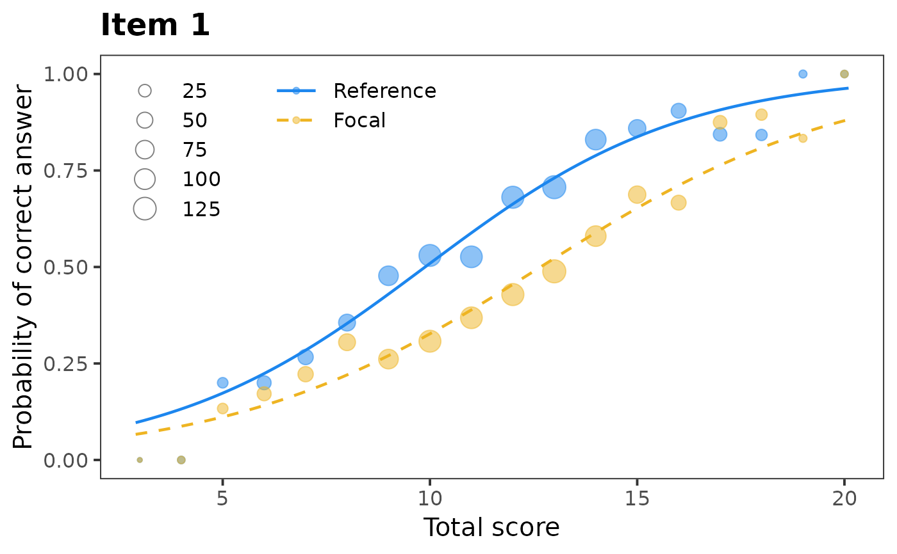
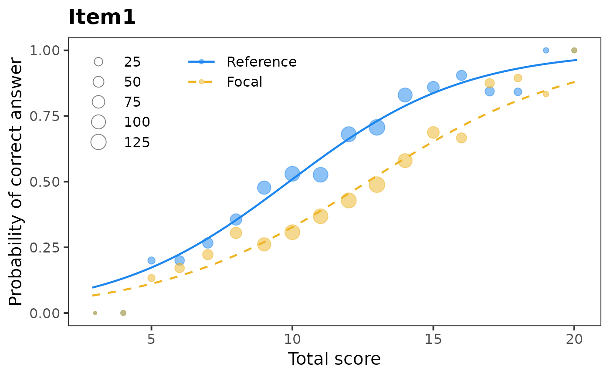
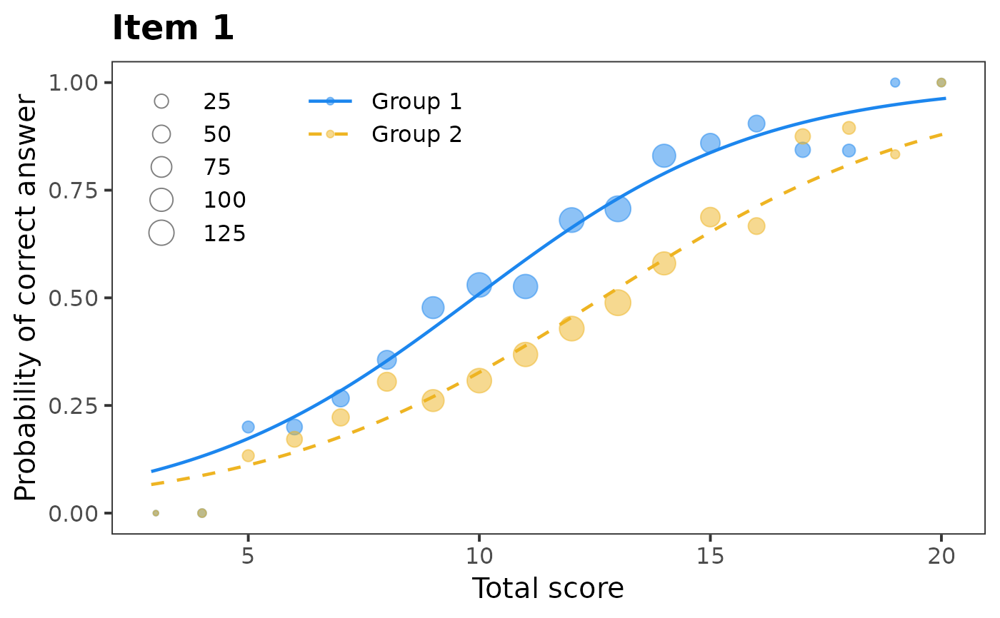
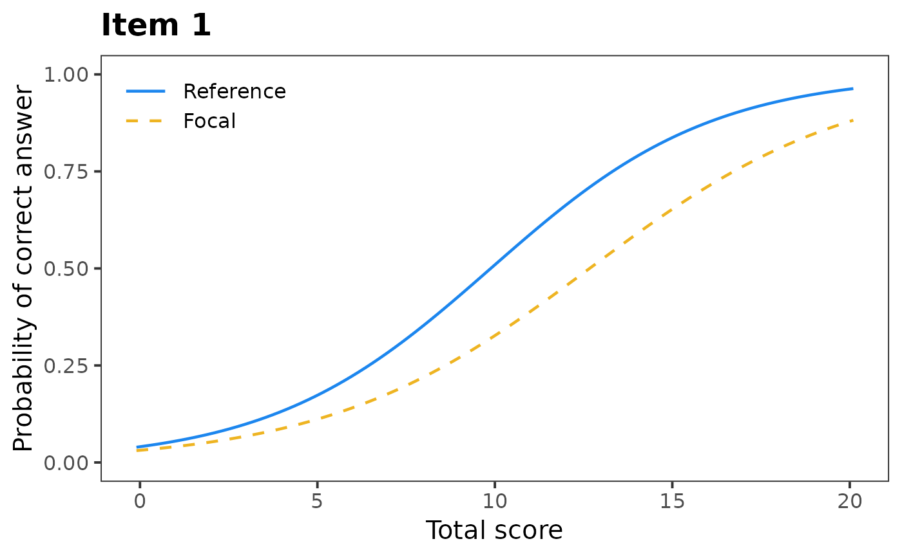

Function for characteristic curve of 2PL logistic DIF model
Source:R/plotDIFLogistic.R
plotDIFLogistic.RdPlots characteristic curve of 2PL logistic DIF model
Usage
plotDIFLogistic(x, item = 1, item.name, group.names = c("Reference",
"Focal"), Data, group, match, draw.empirical = TRUE)Arguments
- x
an object of
"Logistic"class. See Details.- item
numeric: number of item to be plotted
- item.name
character: the name of item to be used as title of plot.
- group.names
character: names of reference and focal group.
- Data
numeric: the data matrix. See Details.
- group
numeric: the vector of group membership. See Details.
- match
character or numeric: specifies observed score used for matching. Can be either
"score", or numeric vector of the same length as number of observations inData. See Details.- draw.empirical
logical: whether empirical probabilities should be calculated and plotted. Default value is
TRUE.
Details
This function plots characteristic curves of 2PL logistic DIF model
fitted by difLogistic() function from difR package using ggplot2.
Data and group are used to calculate empirical probabilities
for reference and focal group. match should be the same as in
x$match. In case that an observed score is used as a matching variable
instead of the total score or the standardized score, match needs to
be a numeric vector of the same the same length as the number of observations
in Data.
Author
Adela Hladka
Institute of Computer Science of the Czech Academy of Sciences
hladka@cs.cas.cz
Patricia Martinkova
Institute of Computer Science of the Czech Academy of Sciences
martinkova@cs.cas.cz
Examples
# loading libraries
library(difR)
# loading data based on GMAT
data(GMAT, package = "difNLR")
Data <- GMAT[, 1:20]
group <- GMAT[, 21]
# DIF detection using difLogistic() function
x <- difLogistic(Data, group, focal.name = 1)
# Characteristic curve by logistic regression model
plotDIFLogistic(x, item = 1, Data = Data, group = group)

# Using name of column as item identifier
plotDIFLogistic(x, item = "Item1", Data = Data, group = group)

# Renaming reference and focal group
plotDIFLogistic(x, item = 1, group.names = c("Group 1", "Group 2"), Data = Data, group = group)

# Not plotting empirical probabilities
plotDIFLogistic(x, item = 1, draw.empirical = FALSE)
